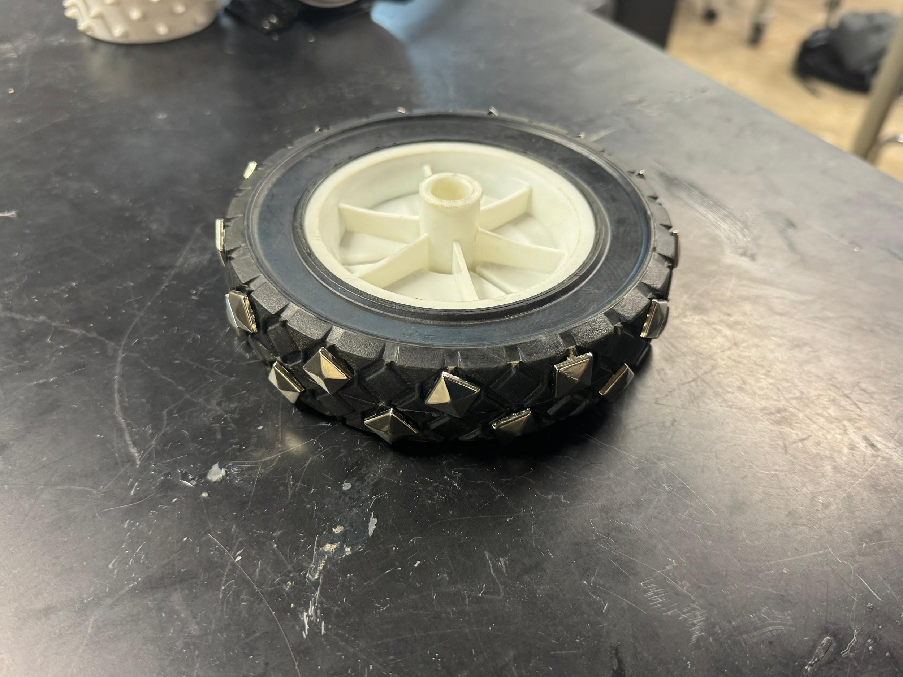

| A | B | C | D | E | F | G | H | I | J | K | |
|---|---|---|---|---|---|---|---|---|---|---|---|
1 | EDP 6b : Prototype Solution- Iterations | ||||||||||
2 | TASK | ||||||||||
3 | 1.0 | Document your prototype interations (ref Workbook pg 130 & 136) | |||||||||
4 | |||||||||||
5 | Copy this table for each iteration of component or sub-system or overall integrated design | ||||||||||
6 | You may link documents that include more detailed information | ||||||||||
7 | |||||||||||
8 | Figure, [caption] | ||||||||||
9 | Iteration Wheel with Treads v1 | 3D Printed PLA wheel design with treads not to scale | Contributor | Date | Hours | ||||||
10 | Purpose of iteration ie: Increase durability | The purpose of this prototype was to test the initial wheel design and geometry at a small scale before developing a functional version | Contributor | ||||||||
11 | Prototype Visuals | ||||||||||
12 | |||||||||||
13 | |||||||||||
14 | |||||||||||
15 | |||||||||||
16 | |||||||||||
17 | |||||||||||
18 | Testing Include testing design, validation, and results | Testing for this iteration was limited to visual validation. The prototype was not full scale, so we focused on assessing the overall shape and tread concept rather than performance. This helped confirm that the general design was feasible before creating a functional, full-size version. | |||||||||
19 | Lessons Learned weaknesses, needed imrovements or refinements | For our first 3D printed prototype we discuss possibly increasing the width of the wheel and the height and width of the treads to make the more prominent. | |||||||||
20 | Next Steps | Our next iteration of the wheel with treads is going to be another small scale wheel but printed with TPU instead of PLA to test the feasbiality of 3D printing with TPU as it can be hard to work with. | |||||||||
21 | |||||||||||
22 | Figure, [caption] | ||||||||||
23 | Iteration ie: Wheel with Spikes v1 | 3D Printed PLA wheel design with treads not to scale | |||||||||
24 | Purpose of iteration ie: Increase durability | The purpose of this iteration was to test the initial wheel design and geometry at a small scale before developing a functional version | |||||||||
25 | Prototype Visuals | ||||||||||
26 | |||||||||||
27 | |||||||||||
28 | |||||||||||
29 | |||||||||||
30 | |||||||||||
31 | |||||||||||
32 | Testing Include testing design, validation, and results | Testing for this iteration was limited to visual validation. The prototype was not full scale, so we focused on assessing the overall shape and spike concept rather than performance. This helped confirm that the general design was feasible before creating a functional, full-size version. | |||||||||
33 | Lessons Learned weaknesses, needed imrovements or refinements | From this prototype, we learned that the overall concept appears promising. However, the main challenge will be ensuring that the spikes stay embedded in the rubber, as durability may be a concern. | |||||||||
34 | Next Steps | Are next iteration of the wheel with spikes, will be a full size functional prototpye, we ordered 9 inch solid rubber wheels and plan to drill holes into the rubber and insert socccer studs to act as the spikes. | |||||||||
35 | |||||||||||
36 | |||||||||||
37 | Figure, [caption] | ||||||||||
38 | Iteration ie: Wheel with Spike v2 | To scale - solid rubber wheel with spikes | |||||||||
39 | Purpose of iteration ie: Increase durability | The next iteration was a full-size rubber wheel where we drilled holes to insert soccer studs, allowing us to test traction and durability with real spikes | |||||||||
40 | Prototype Visuals | ||||||||||
41 | |||||||||||
42 | |||||||||||
43 | |||||||||||
44 | |||||||||||
45 | |||||||||||
46 | |||||||||||
47 | Testing Include testing design, validation, and results | The testing relied on ensuring the wheels are up to scale. We measured the wheel to be 8 inches in diameter, accurate to what the Rice Robotics team desires. In addition, we tested the durability of the spikes and their implantation intop the rubber by dropping the wheel from a height of 5 feet. | |||||||||
48 | Lessons Learned weaknesses, needed imrovements or refinements | Something we learned from this iteration was the fact that the spikes seemed to stay in the rubber wheel without the use of adhesive, in our next iteration of the spike wheel we will use the same drill bit to ensure the same results. | |||||||||
49 | Next Steps | Test the traction of the spiked wheels on different terrains that will come up in the URC. | |||||||||
50 | |||||||||||
51 | |||||||||||
52 | Figure, [caption] | ||||||||||
53 | Iteration ie: Wheel with Spike v1.5 | Not to scale - solid rubber wheel with dull spikes | |||||||||
54 | Purpose of iteration ie: Increase durability | The purpose of this prototype was to construct an intermediate wheel design between v1 and v2 at a larger scale by using a rubber wheel and dull metal studs as the material | |||||||||
55 | Prototype Visuals |  | |||||||||
56 | |||||||||||
57 | |||||||||||
58 | |||||||||||
59 | |||||||||||
60 | |||||||||||
61 | |||||||||||
62 | Testing Include testing design, validation, and results | Testing for this iteration was limited to visual validation. The prototype was not full-scale, and the metal spikes are not functional, so we focused on assessing the overall shape and spike concept rather than performance. This helped confirm that the general design was feasible before creating a functional, full-size version. | |||||||||
63 | Lessons Learned weaknesses, needed imrovements or refinements | From this intermediate prototype, we learned that the concept of attaching spikes to solid rubber wheels is feasible. However, the metal spikes of this version are dull, meaning that the spikes will not provide enough traction as we need. Therefore, we have to change the types of spikes to the ones with a sharper end. | |||||||||
64 | Next Steps | Our next step will be constructing a full-size rubber wheel with sharper metal spikes. The soccer studs will be installed by drilling holes into the 9-inch solid rubber sheels. | |||||||||
65 | |||||||||||
66 | |||||||||||
67 | Iteration Wheel with Treads v1 | 3D Printed TPU wheel design with treads not to scale | |||||||||
68 | Purpose of iteration ie: Increase durability | The purpose of this prototype was to test the feasabilty of a TPU printed wheel before attempting a full size print | |||||||||
69 | Prototype Visuals | ||||||||||
70 | |||||||||||
71 | |||||||||||
72 | |||||||||||
73 | |||||||||||
74 | |||||||||||
75 | |||||||||||
76 | Testing Include testing design, validation, and results | Testing for this iteration was limited to visual validation. The prototype was not full scale, so we focused on assessing the overall shape and tread concept rather than performance. This helped confirm that the general design was feasible before creating a functional, full-size version. | |||||||||
77 | Lessons Learned weaknesses, needed imrovements or refinements | Our first 3D TPU printed prototype was not very refined the material seemed to have good traction but the print was not very successful | |||||||||
78 | Next Steps | Becuase we were not happy with the way the TPU wheel turned out we decided to focus soley on the wheel with spikes | |||||||||